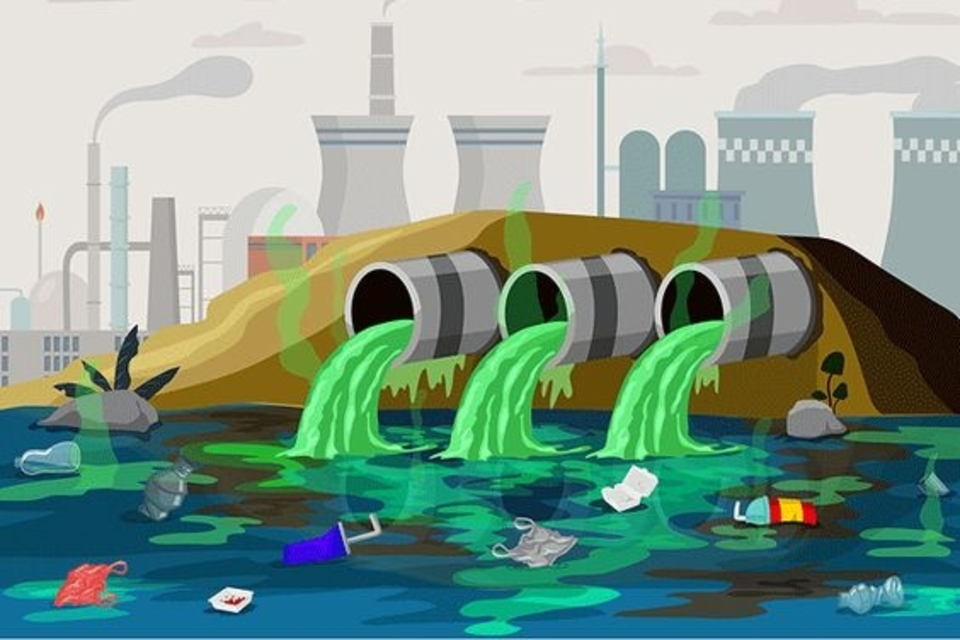
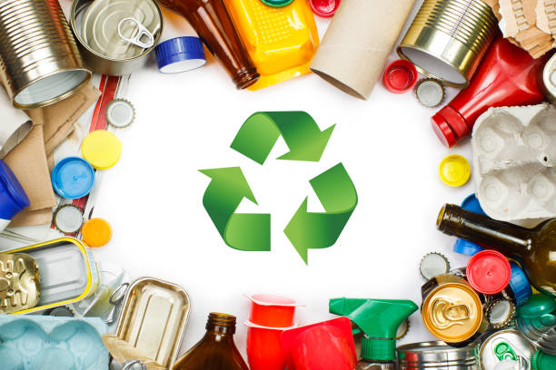

Sampah merupakan sesuatu yang tidak dapat dihindari dalam kehidupan sehari-hari. Menurut Kamus Besar Bahasa Indonesia (KBBI) sampah adalah barang atau benda yang dibuang karena tidak terpakai lagi dan sebagainya; kotoran seperti daun, kertas.
Berdasarkan asalnya, sampah dibagi menjadi dua, yaitu sampah organik dan non-organik. Dalam upaya mengelola sampah dengan baik, penting untuk memahami perbedaan antara sampah organik dan non-organik karena keduanya memiliki karakteristik dan cara pengolahan yang berbeda.
Di artikel ini kita akan membahas perbedaan antara sampah organik dan non-organik, serta memberikan contoh untuk masing-masing jenis sampah.
Sampah Organik
Sampah organik adalah jenis sampah yang berasal dari bahan-bahan yang bisa membusuk dan terurai secara alami. Sampah organik mayoritas terdiri dari sisa makanan, dedaunan, potongan buah, sayuran, bangkai hewan, dan bahan organik lainnya.
Proses penguraian alami dari sampah organik disebut sebagai dekomposisi, di mana mikroorganisme seperti bakteri dan jamur membantu memecah bahan organik menjadi komponen yang lebih sederhana.
Contoh Sampah Organik:
• Sisa makanan: kulit buah, sayuran, sisa nasi, roti, dll.
• Daun dan rumput: dedaunan yang dipangkas, rumput yang dicabut, dll.
• Sisa-sisa tanaman: batang, ranting, atau dedaunan hasil panen.
• Kertas dan kardus yang terkontaminasi makanan.
Sampah Non-Organik
Sampah non-organik, atau sampah anorganik, adalah jenis sampah yang tidak mudah terurai secara alami. Sampah ini biasanya berasal dari bahan buatan manusia, seperti plastik, kertas berlapis, logam, kaca, dan bahan kimia sintetis.
Karena tidak mudah terurai, sampah non-organik seringkali menyebabkan masalah lingkungan yang serius, termasuk pencemaran tanah dan air serta ancaman bagi satwa liar.
Contoh Sampah Non-Organik:
• Plastik: botol plastik, kantong plastik, wadah plastik, dll.
• Logam: kaleng, sisa kawat, tutup botol, dll.
• Kaca: botol kaca, pecahan kaca, kaca jendela.
• Bahan kimia: baterai, cat, obat-obatan kedaluwarsa.
• Kertas berlapis plastik atau logam.
Perbedaan antara Sampah Organik dan Non-Organik:
• Asal usul: sampah organik berasal dari bahan alami seperti makanan dan tanaman, sedangkan sampah non-organik berasal dari bahan buatan manusia seperti plastik dan logam.
• Kemampuan penguraian: sampah organik mudah terurai melalui proses alami, sementara sampah non-organik memerlukan waktu lama atau bahkan tidak dapat terurai sama sekali.
• Dampak lingkungan: sampah organik yang membusuk biasanya tidak menimbulkan dampak negatif, sedangkan sampah non-organik dapat mencemari tanah, air, dan merusak ekosistem.
• Cara pengolahan: sampah organik dapat diolah menjadi kompos, sedangkan sampah non-organik memerlukan proses daur ulang atau pengolahan khusus.
Manfaat Sampah Organik dan Non-Organik
Manfaat Sampah Organik:
• Pembuatan pupuk kompos: sampah organik dapat diolah menjadi kompos yang kaya nutrisi untuk menyuburkan tanah.
• Energi terbarukan: sampah organik dapat diproses menjadi biogas sebagai sumber energi ramah lingkungan.
• Mengurangi penumpukan sampah: pengolahan yang tepat dapat mengurangi volume sampah yang dibuang ke TPA.
Manfaat Sampah Non-Organik:
• Daur ulang bahan baku: plastik, logam, dan kertas dapat didaur ulang untuk mengurangi penggunaan sumber daya alam.
• Energi dari sampah (Waste-to-Energy): sampah non-organik tertentu dapat digunakan sebagai bahan bakar untuk menghasilkan energi.
• Material konstruksi alternatif: beberapa sampah seperti botol plastik dapat dimanfaatkan sebagai bahan bangunan.
• Kerajinan dan seni: berbagai jenis sampah non-organik dapat dijadikan karya seni atau kerajinan kreatif.
Sampah organik dan non-organik sama-sama memiliki manfaat jika dikelola dengan benar. Sampah organik dapat menjadi kompos atau biogas, sedangkan sampah non-organik bisa didaur ulang atau dimanfaatkan sebagai sumber energi. Dengan pengelolaan yang tepat, sampah dapat menjadi sumber daya berharga sekaligus mengurangi dampaknya terhadap lingkungan.
Related Resources

Environmental Pollution
Learn the basic of environment pollution

Waste Management
Effective waste management method

Climate Change
How waste contributes to global warming and why it matters